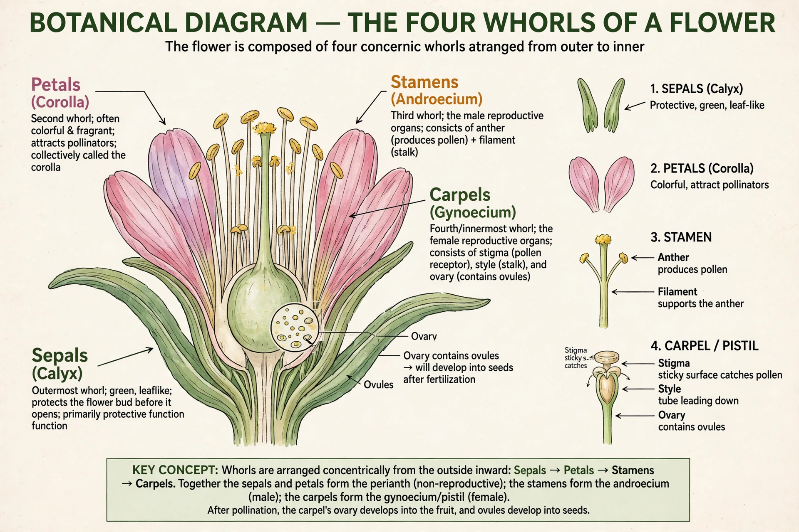

ABC model of flower development

The ABC model of flower development is a scientific model of the process by which flowering plants produce a pattern of gene expression in meristems that leads to the formation of the four types of floral organs: sepals, petals, stamens and carpels. It was formulated from studies of homeotic mutants in Arabidopsis thaliana and Antirrhinum majus (snapdragon) and published in its classic form by Enrico Coen and Elliot Meyerowitz in 1991.
The model
A flower develops in four concentric whorls. The model proposes three classes of homeotic genes, most of them encoding MADS-box transcription factors:
- Class A genes alone specify sepals (whorl 1).
- Class A + B together specify petals (whorl 2).
- Class B + C together specify stamens (whorl 3).
- Class C alone specifies carpels (whorl 4).
Class A and class C genes mutually repress each other, so loss of one expands the expression of the other. In Arabidopsis, class A includes APETALA1 and APETALA2, class B includes APETALA3 and PISTILLATA, and class C is AGAMOUS. Mutants lacking class B function, for example, produce sepals and carpels only.
Extensions
Later work extended the model: class D genes (such as SEEDSTICK) specify ovule identity, and class E genes (the SEPALLATA genes) are required in all whorls for normal organ identity, giving the ABCDE model. The proteins are thought to act in combinations known as the "floral quartet" model.
See also: Arabidopsis thaliana · MADS-box · Flower